Опись Документов
находящихся в след. деле № 13749
Справка на арест Кореца — 1-3 стр. [нрзб]
Ордер — 4.
Протокол обыска — 5.
Квитанция № 21 — 6.
— „ — 22 — 7.
— „ — 23 — 8.
— „ — 13749 — 9.
Анкета арест. Корец — 10.
Постановление об избрании меры пресеч. — 11.
[нрзб] — 12.
— „ — Розенфельда — 13-14
— „ — Шубникова — 15-16.
— „ — [нрзб] — 17-18
— „ — Ландау Л.Д. — 19-28.
Протокол допроса Корец М.А. — 29-56
Протокол — „ — — 52-58
Постановление [нрзб] — 59
Протокол предъявления обвинения — 60
Справка [нрзб] по делу — 61
Обвинительное заключение — 62-65
[нрзб] акт за № 659 [нрзб] — 66
Выписка из протокола [нрзб] июля [нрзб] 1938 г. — 67
[нрзб] от 25.IV.39 — [нрзб]
[нрзб] от 25.V.39 — [нрзб]
[нрзб] 19 мая 1939 г. [нрзб]
Опер. Уполн. 3 отд. 2 отд. [подпись]
17.V.38.
Начальник 3 от. [подпись]
стр.4 Ордер на арест - 28.04.38
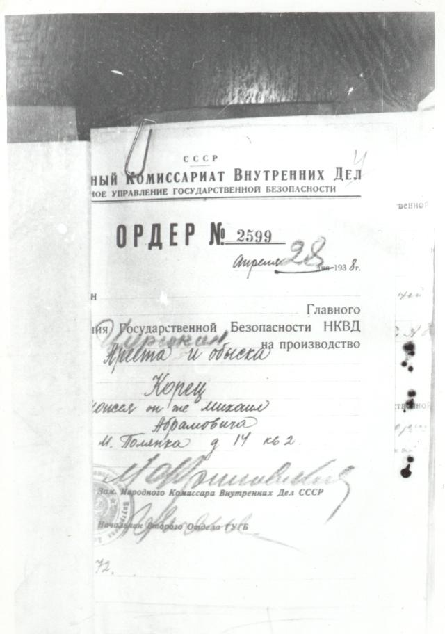
СССР
НЫЙ КОМИССАРИАТ ВНУТРЕННИХ ДЕЛ
ОЕ УПРАВЛЕНИЕ ГОСУДАРСТВЕННОЙ БЕЗОПАСНОСТИ
ОРДЕР № 2599
апреля 28 дня 1938 г.
Н
Главного
Управления Государственной Безопасности НКВД
на производство
ареста и обыска
Корец
Моисей (он же Михаил)
Абрамович
ул. Толстого д 14 кв 2
[печать]
Зам. Народного Комиссара Внутренних Дел СССР
[подпись]
Начальник Второго Отдела ГУГБ
[подпись]
[на полях] 4
[на полях] [нрзб]
стр.5 Протокол обыска - 28.04.38
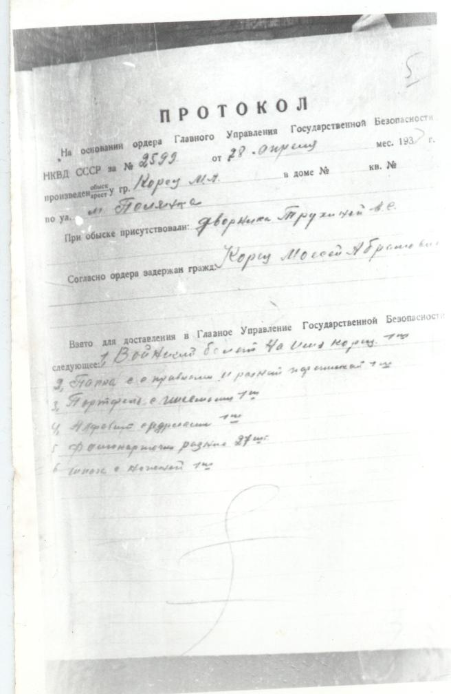
5
ПРОТОКОЛ
На основании ордера Главного Управления Государственной Безопасности
НКВД СССР за № 2599 от 28 апреля мес. 1938 г.
произведен обыск у гр. Корец М.А. в доме № кв. №
по ул. М. Толстого
При обыске присутствовали: Дворник Трухина А.Е.
Согласно ордера задержан гражд. Корец Моисей Абрамович
Взято для доставления в Главное Управление Государственной Безопасности
следующее:
1. [нрзб] на имя Корец. 1 шт.
2. Папка с бумагами и разной перепиской 1 шт.
3. Портфель с письмами 1 шт.
4. Адресн[нрзб] 1 шт.
5. Фотокарточки разные 8 шт.
6. [нрзб] 1 шт.
стр.6 Квитанция - 27.04.38 (?)
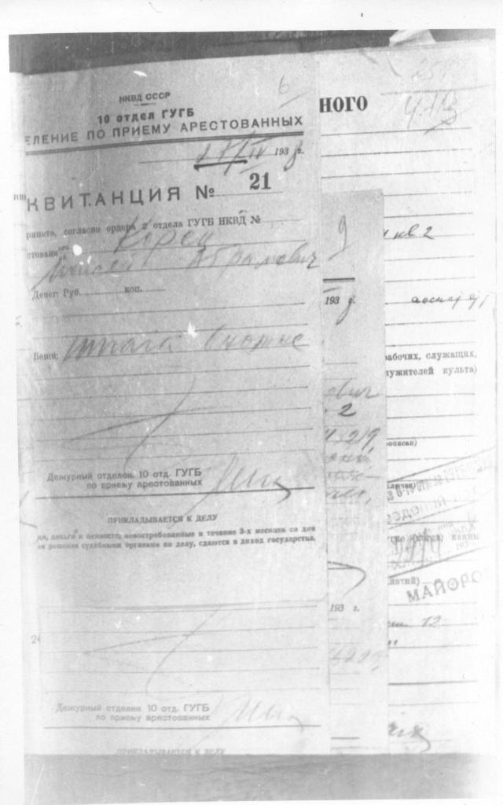
6
НКВД СССР
10 отдел ГУГБ
ЕЛЕНИЕ ПО ПРИЕМУ АРЕСТОВАННЫХ
28/IV 1938 г.
КВИТАНЦИЯ № 21
Принято, согласно ордера 2 отдела ГУГБ НКВД №
от арестованного Корец
Моисей Абрамович
Денег: Руб. коп.
Вещи: [нрзб]
Дежурный отделен. 10 отд. ГУГБ
по приему арестованных
[подпись]
ПРИКЛАДЫВАЕТСЯ К ДЕЛУ
[нрзб], деньги и ценности, невостребованные в течение 3-х месяцев со дня
[нрзб] решения судебными органами по делу, сдаются в доход государства.
[на полях] 24
НОГО
[на полях] 4/10
[на полях] кв 2
[на полях] ассист.
193 г.
[на полях] рабочих, служащих,
служителей культа)
[печать] [нрзб] 8 ОТДЕЛЕНИЕ ГУГБ НКВД
[печать] СВЕДЕНИЯ
[нрзб]
МАЙОРОВ
[на полях] 12
[на полях] [нрзб]
стр.7 Квитанция - 27.04.38 (?)
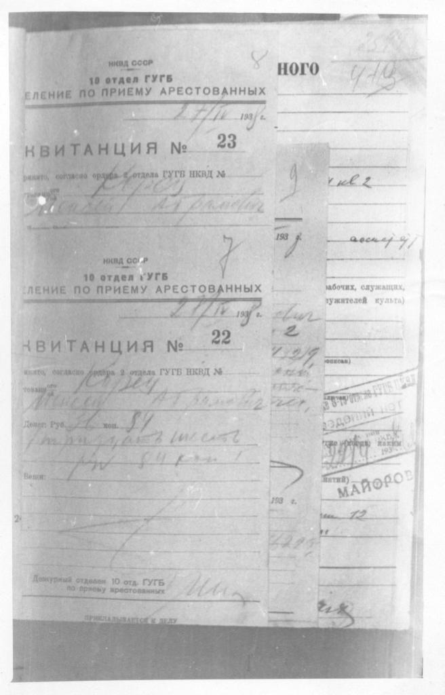
8
НКВД СССР
10 отдел ГУГБ
ЕЛЕНИЕ ПО ПРИЕМУ АРЕСТОВАННЫХ
28/IV 1938 г.
КВИТАНЦИЯ № 23
Принято, согласно ордера 2 отдела ГУГБ НКВД №
от арестованного Корец
Моисей Абрамович
Денег: Руб. коп.
Вещи:
7
НКВД СССР
10 отдел ГУГБ
ЕЛЕНИЕ ПО ПРИЕМУ АРЕСТОВАННЫХ
28/IV 1938 г.
КВИТАНЦИЯ № 22
Принято, согласно ордера 2 отдела ГУГБ НКВД №
от арестованного Корец
Моисей Абрамович
Денег: Руб. 36 коп. 54
трудовая книжка
руб. 54 коп.
Вещи: [нрзб]
Дежурный отделен. 10 отд. ГУГБ
по приему арестованных
[подпись]
ПРИКЛАДЫВАЕТСЯ К ДЕЛУ
НОГО
[на полях] 4/10
[на полях] 9
[на полях] кв 2
[на полях] ассист.
193 г.
[на полях] рабочих, служащих,
служителей культа)
[печать] [нрзб]
[печать] СВЕДЕНИЯ НЕТ
МАЙОРОВ
[на полях] 12
[на полях] [нрзб]
стр.8 Квитанция - 27.04.38 (?)
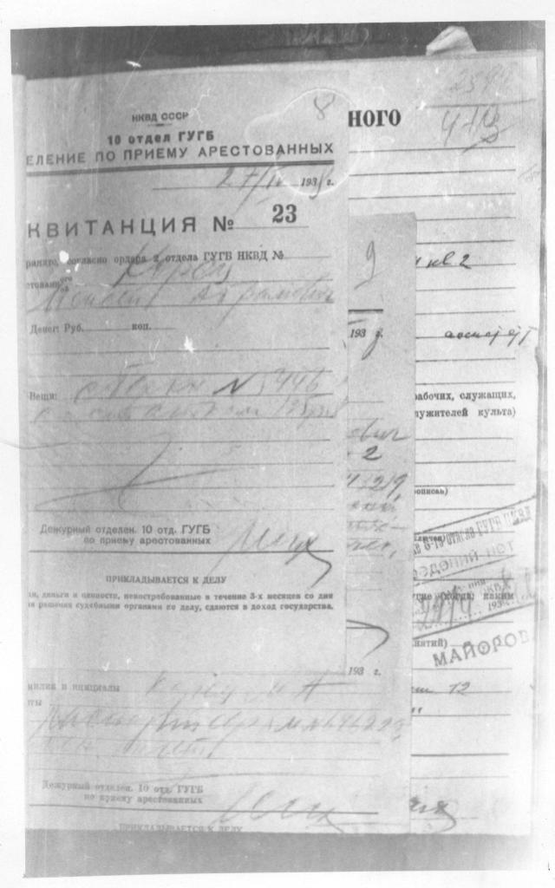
8
НКВД СССР
10 отдел ГУГБ
ЕЛЕНИЕ ПО ПРИЕМУ АРЕСТОВАННЫХ
28/IV 1938 г.
КВИТАНЦИЯ № 23
Принято, согласно ордера 2 отдела ГУГБ НКВД №
от арестованного Корец
Моисей Абрамович
Денег: Руб. коп.
Вещи: [нрзб]
Дежурный отделен. 10 отд. ГУГБ
по приему арестованных
[подпись]
ПРИКЛАДЫВАЕТСЯ К ДЕЛУ
[нрзб], деньги и ценности, невостребованные в течение 3-х месяцев со дня
[нрзб] решения судебными органами по делу, сдаются в доход государства.
квитанция и материалы
Корец М.А.
[нрзб]
[нрзб]
Дежурный отделен. 10 отд. ГУГБ
по приему арестованных
[подпись]
ПРИКЛАДЫВАЕТСЯ К ДЕЛУ
НОГО
[на полях] 4/10
[на полях] 9
[на полях] кв 2
[на полях] ассист.
193 г.
[на полях] рабочих, служащих,
служителей культа)
[печать] [нрзб] 8 ОТДЕЛЕНИЕ ГУГБ НКВД
[печать] СВЕДЕНИЙ НЕТ
МАЙОРОВ
[на полях] 12
[на полях] [нрзб]
стр.9 Квитанция - 27.04.38 (?)
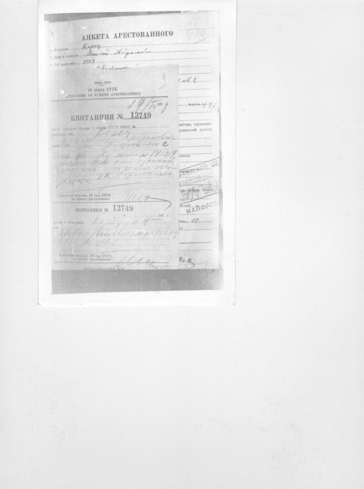
АНКЕТА АРЕСТОВАННОГО
1. Фамилия Корец
2. Имя и отчество Моисей Абрамович
3. Год рождения 1908
4. Место рождения г. Севастополь
9
НКВД СССР
10 отдел ГУГБ
ОТДЕЛЕНИЕ ПО ПРИЕМУ АРЕСТОВАННЫХ
28/IV 1938 г.
КВИТАНЦИЯ № 13749
Принято, согласно ордера 2 отдела ГУГБ НКВД №
от арестованного Корец
Моисей Абрамович
адрес: ул. Толстого д. 14 кв. 2
Вещи: [нрзб]
Дежурный отделен. 10 отд. ГУГБ
по приему арестованных
[подпись]
КВИТАНЦИЯ № 13749
квитанция и материалы
Корец М.А.
[нрзб]
Дежурный отделен. 10 отд. ГУГБ
по приему арестованных
[подпись]
ПРИКЛАДЫВАЕТСЯ К ДЕЛУ
[на полях] кв 2
[на полях] ассист.
[на полях] рабочих, служащих,
служителей культа)
[печать] [нрзб]
[печать] СВЕДЕНИЙ НЕТ
МАЙОРОВ
[на полях] 12
[на полях] [нрзб]
стр.11 Постановление об избрании меры пресечения - 31.06.38
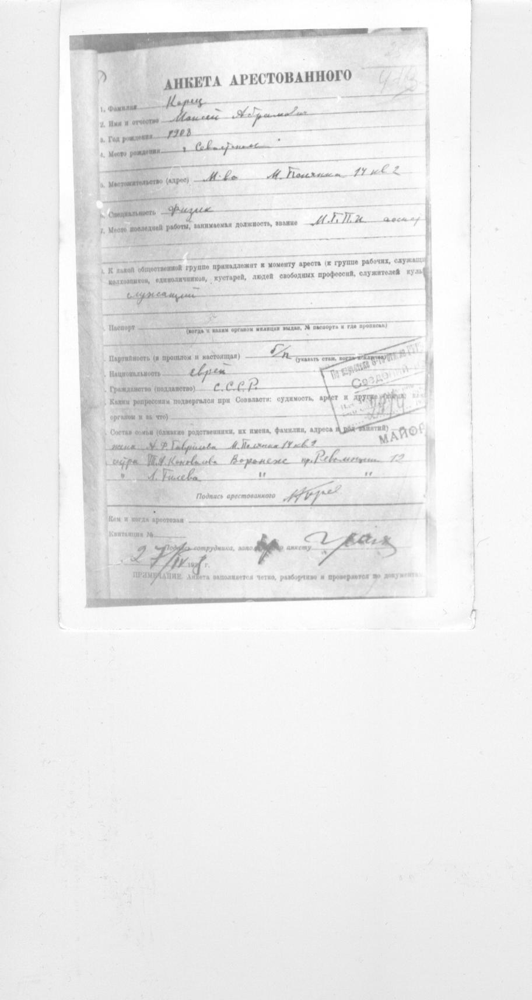
АНКЕТА АРЕСТОВАННОГО
1. Фамилия Корец
2. Имя и отчество Моисей Абрамович
3. Год рождения 1908
4. Место рождения г. Севастополь
5. Местожительство (адрес) М-во М. Толстого 14 кв 2
6. Специальность физик
7. Место последней работы, занимаемая должность, звание М.Г.П.И. ассист.
8. К какой общественной группе принадлежит к моменту ареста (к группе рабочих, служащих,
колхозников, единоличников, кустарей, людей свободных профессий, служителей культа)
служащий
9. Паспорт
(когда и каким органом милиции выдан, № паспорта и где прописан)
10. Партийность (в прошлом и настоящая) б/п
11. Национальность еврей
12. Гражданство (подданство) С.С.С.Р.
13. Каким репрессиям подвергался при Соввласти: судимость, арест и другие (когда, каким
органом и за что)
14. Состав семьи (близкие родственники, их имена, фамилии, адреса и род занятий)
жена Л. Р. Габрилова М. Толстого 14 кв 2
сестра [нрзб] Воронеж пр. Революции 12
" А. Киселева " "
Подпись арестованного Корец
Кем и когда арестован
Квитанция №
Подпись сотрудника, заполнявшего анкету [подпись]
[нрзб]/IV 1938 г.
ПРИМЕЧАНИЕ. Анкета заполняется четко, разборчиво и проверяется по документам.
[печать] [нрзб] ОТДЕЛЕНИЕ ГУГБ НКВД
[печать] СВЕДЕНИЯ
МАЙОРОВ
Расчетная книжка
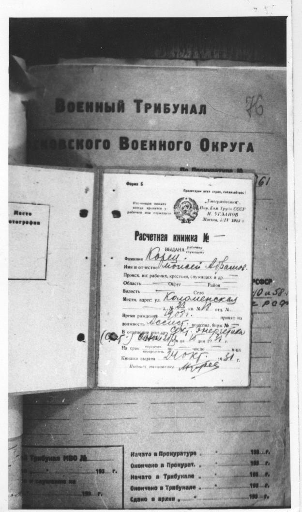
ВОЕННЫЙ ТРИБУНАЛ
[нрзб]НОВСКОГО ВОЕННОГО ОКРУГА
76
Форма Б
Пролетарии всех стран, соединяйтесь!
„Утверждено“
Нар. Ком. Труда СССР
Н. УГЛАНОВ
Москва, 3/IV 1923 г.
[печать]
Расчетная книжка № —
ВЫДАНА
рабочему
служащему
Фамилия Корец
Имя и отчество Моисей Абрамович
Происх. из: рабочих, крестьян, служащих и др.
Область — Округ — Район —
Волость — Село —
Местож. адрес: ул. Коломенская
д. № 23 кв. № 19 отд. № [нрзб]
Время рождения 1907 г. принят на
должность ассист. по испол. бюр. № [нрзб]
В отделение или цех [нрзб] энергетика
[нрзб] 19 [нрзб] г.
На срок [нрзб]
Книжка выдана 31 окт. 1931 г.
Подпись владельца Корец
[на полях] 61
[на полях] РСФСР [нрзб]
Место фотографии
Начато в Прокуратуре . . . . 193 . г.
Окончено в Прокурат. . . . . 193 . г.
Начато в Трибунале . . . . 193 . г.
Окончено в Трибунале . . . . 193 . г.
Сдано в архив . . . . 193 . г.
[нрзб] Трибунала [нрзб]
193 . г.
стр. 108 Отзыв из Уральского Физмеха
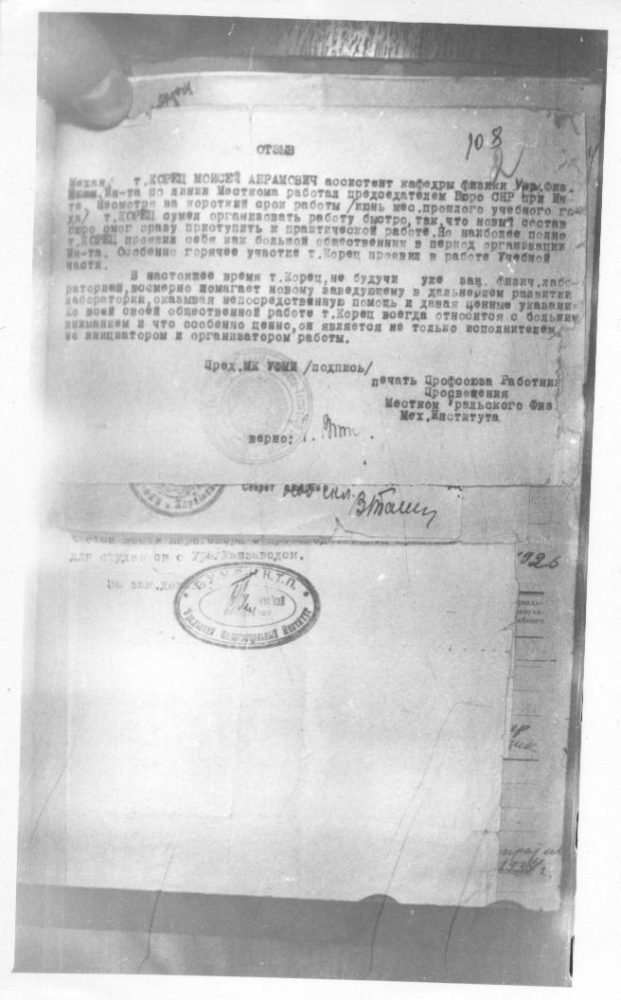
108
ОТЗЫВ
Настоящим т. КОРЕЦ МОИСЕЙ АБРАМОВИЧ ассистент кафедры физики Укр.Физ.
Мех.Ин-та по линии Месткома работал председателем Бюро СНР при Ин-
те. Несмотря на короткий срок работы /июнь мес.прошлого учебного го-
да/ т.КОРЕЦ сумел организовать работу быстро, так что новый состав
бюро смог сразу приступить к практической работе. До наиболее полно
т.КОРЕЦ проявил себя как большой общественник в период организации
Ин-та. Особенно горячее участие т.Корец проявил в работе Учебной
части.
В настоящее время т.Корец, не будучи уже зав. физ. лабо-
раторией, всемерно помогает новому заведующему в дальнейшем развитии
лаборатории, оказывая непосредственную помощь и давая ценные указания.
До всей своей общественной работе т.Корец всегда относится с большим
вниманием и что особенно ценно, он является не только исполнителем,
но инициатором и организатором работы.
Пред. МК УФМИ /подпись/
печать Профсоюза Работников
Просвещения
Месткома Уральского Физ
Мех. Института
[печать]
верно: [подпись]
[нрзб]
Секрет [нрзб]
[подпись]
[нрзб]
для студентов с Укр.Инж.водом.
[печать] Уральский Индустриальный Институт
1926
[нрзб]
стр. 109 Справка из Харьковского университета 03.02.37
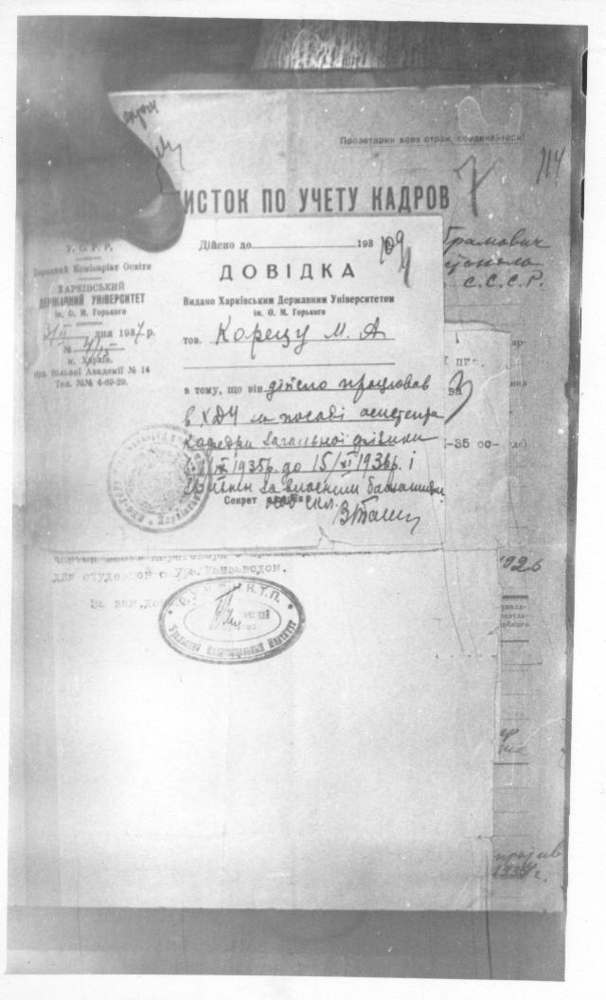
Пролетарии всех стран, соединяйтесь!
[нрзб]ИСТОК ПО УЧЕТУ КАДРОВ
[на полях] [нрзб]
114
У.С.Р.Р.
Народний Комісаріат Освіти
ХАРКІВСЬКИЙ
ДЕРЖАВНИЙ УНІВЕРСИТЕТ
ім. О. М. Горького
[нрзб]
м. Харків
[нрзб] Іванові Академії № 14
Тел. №№ 4-09-20.
[печать]
Дійсно до ________ 193 [нрзб]
109
ДОВІДКА
Видано Харківським Державним Університетом
ім. О. М. Горького
тов. Корецу М. А.
в тому, що він дійсно працював
в ХДУ на посаді асистента
кафедри загальної фізики
з 1/IX 1935 р. до 15/XI 1936 р. і
звільнений за власним бажанням.
Секрет [нрзб] [подпись]
[нрзб] Абрамович
[нрзб]
С.С.С.Р.
для студентов с [нрзб]
[печать]
1926
[нрзб]
стр. 110 Выписка из приказа по Уральскому ФТИ 15.2.35
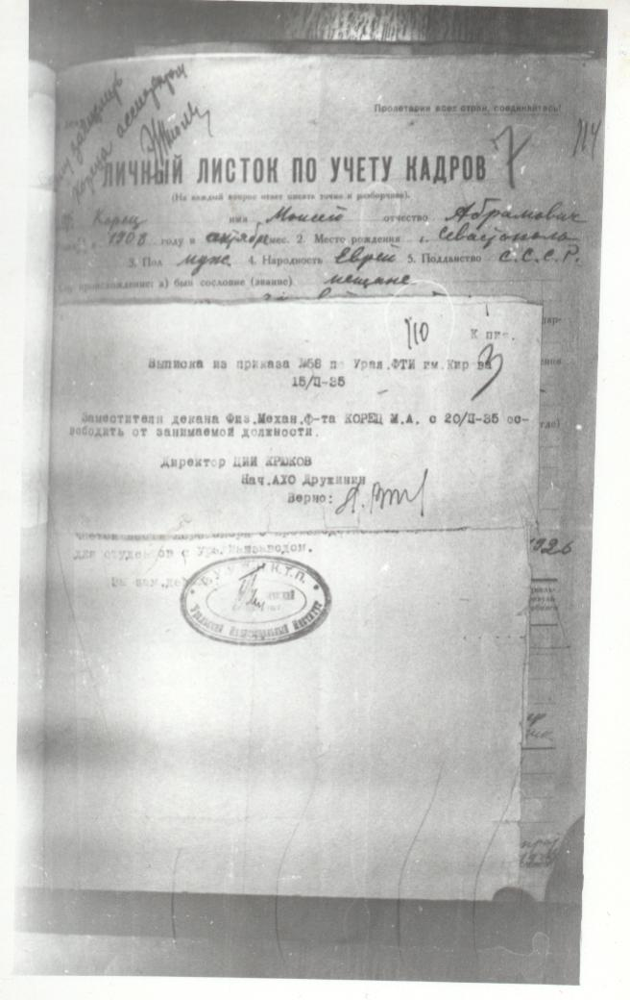
[на полях] [нрзб]
Пролетарии всех стран, соединяйтесь!
ЛИЧНЫЙ ЛИСТОК ПО УЧЕТУ КАДРОВ
(На каждый вопрос ответ писать точно и разборчиво).
114
Фамилия Корец имя Моисей отчество Абрамович
1908 году в октябре мес. 2. Место рождения г. Севастополь
3. Пол муж. 4. Народность еврей 5. Подданство С.С.С.Р.
Социальное происхождение: а) был сословие (звание) мещанин
110
Выписка из приказа № 58 по Урал.ФТИ [нрзб]
15/Д-35
Заместителя декана Физ.Механ.Ф-та КОРЕЦ М.А. с 20/Д-35 ос-
вободить от занимаемой должности.
Директор ЦИИ [нрзб]
Нач. АХО Дружинин
Верно: [подпись]
[нрзб]
для студентов с [нрзб]
[печать] Уральский Индустриальный Институт
1926
[нрзб]
стр. 111 Удостоверение из Уральского Физмеха 22.01.35
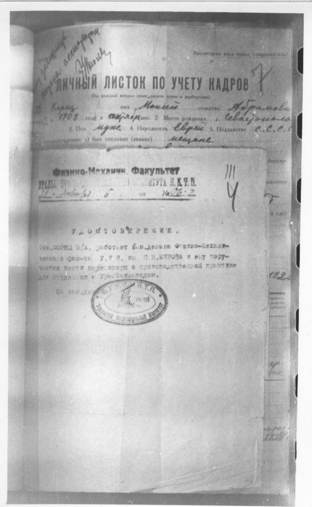
[на полях] [нрзб]
Пролетарии всех стран, соединяйтесь!
ЛИЧНЫЙ ЛИСТОК ПО УЧЕТУ КАДРОВ
(На каждый вопрос ответ писать точно и разборчиво).
Фамилия Корец имя Моисей отчество Абрамович
1908 году в октябре мес. 2. Место рождения г. Севастополь
3. Пол муж. 4. Народность еврей 5. Подданство С.С.С.Р.
Социальное происхождение: а) был сословие (звание) мещанин
Физико-Механич. Факультет
УРАЛЬСКИЙ [нрзб] ИНСТИТУТА И.К.П.И.
[нрзб] № [нрзб]
111
УДОСТОВЕРЕНИЕ.
тов.КОРЕЦ М.А. работает б.м. декана Физико-Механи-
ческого фак-та У.И.И. им. С.М.КИРОВА и ему пору-
чается вести переговоры о производственной практике
для студентов с Уралмашзаводом.
[печать] Уральский Индустриальный Институт
1926
[нрзб]
стр. 112 Заявление директору института им. Бубнова 17.09.37
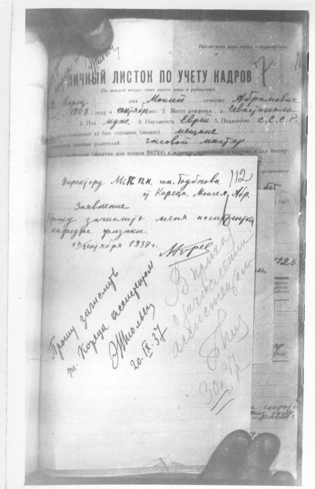
[на полях] [нрзб]
Пролетарии всех стран, соединяйтесь!
ЛИЧНЫЙ ЛИСТОК ПО УЧЕТУ КАДРОВ
(На каждый вопрос ответ писать точно и разборчиво).
Фамилия Корец имя Моисей отчество Абрамович
1908 году в октябре мес. 2. Место рождения г. Севастополь
3. Пол муж. 4. Народность еврей 5. Подданство С.С.С.Р.
Социальное происхождение: а) был сословие (звание) мещанин
занятие родителей часовой мастер
112
Директору М.Г.П.И. им. Бубнова
от Кореца Моисея Абр.
Заявление
Прошу зачислить меня ассистентом
кафедры физики.
13 сентября 1937 г.
Корец
Прошу зачислить
т. Кореца ассистентом
[подпись]
20.IX.37
[на полях] [нрзб]
В приказ
Зачислен ассистентом
[подпись]
[нрзб]
30/IX
[нрзб]
1926
[нрзб]
стр. 113 Справка из Ленинградского индустриального института 02.03.35
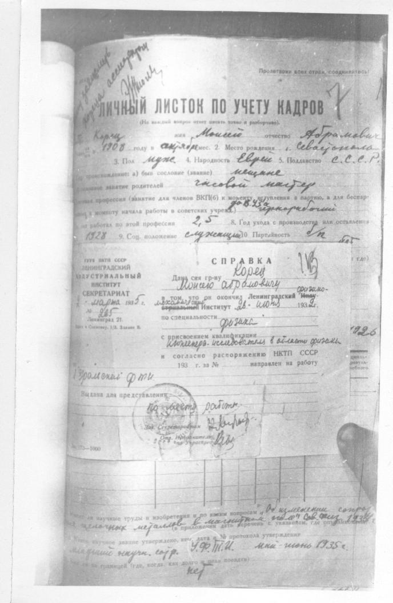
[на полях] [нрзб]
Пролетарии всех стран, соединяйтесь!
ЛИЧНЫЙ ЛИСТОК ПО УЧЕТУ КАДРОВ
(На каждый вопрос ответ писать точно и разборчиво).
Фамилия Корец имя Моисей отчество Абрамович
1908 году в октябре мес. 2. Место рождения г. Севастополь
3. Пол муж. 4. Народность еврей 5. Подданство С.С.С.Р.
Социальное происхождение: а) был сословие (звание) мещанин
занятие родителей часовой мастер
[нрзб] профессия (занятие для членов ВКП(б) к моменту вступления в партию, а для беспар-
тийных к моменту начала работы в советских учрежд.) до 1928 г. чернорабочий
[нрзб] работал по этой профессии 2,5 8. Год ухода с производства или оставления
1928 9. Соц. положение служащий 10. Партийность б/п
ГУУЗ НКТП СССР
ЛЕНИНГРАДСКИЙ
ИНДУСТРИАЛЬНЫЙ
ИНСТИТУТ
СЕКРЕТАРИАТ
[нрзб] марта 1935 г.
№ [нрзб]
Ленинград, 21.
113
СПРАВКА
Дана сия гр-ну Корец
Моисею Абрамовичу
в том, что он окончил Ленинградский
[нрзб] Институт [нрзб] 1932 г.
по специальности
физика
с присвоением квалификации
инженер-исследователь в области физики
и согласно распоряжению НКТП СССР
193 г. за № направлен на работу
в Уральский ФТИ
Выдана для представления
по месту работы.
[подпись]
[подпись]
[нрзб] научные труды и изобретения и по каким вопросам [нрзб] 1932 г.
[нрзб] ученое звание утверждено, кем, дата и № протокола утверждения
научн. сотр. У.Ф.Т.И. май июнь 1935 г.
[нрзб] за границей (где, когда, как долго и цель поездки)
нет
стр. 116 Личный листок по учету кадров 14(?).09.37
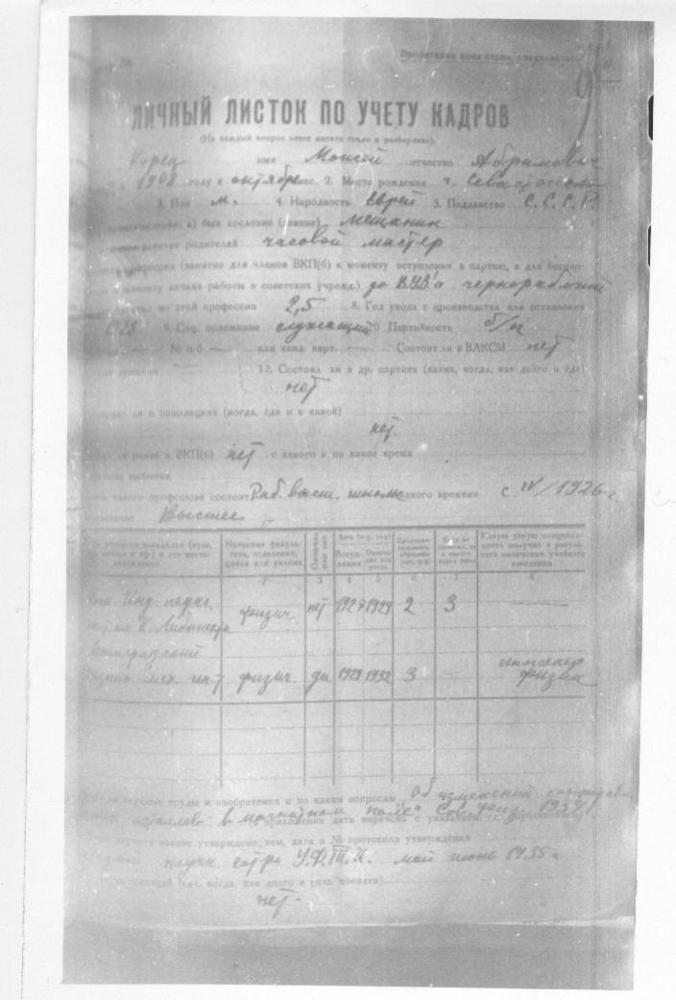
Пролетарии всех стран, соединяйтесь!
ЛИЧНЫЙ ЛИСТОК ПО УЧЕТУ КАДРОВ
(На каждый вопрос ответ писать точно и разборчиво).
Фамилия Корец имя Моисей отчество Абрамович
1908 году в октябре мес. 2. Место рождения г. Севастополь
3. Пол м. 4. Народность еврей 5. Подданство С.С.С.Р.
Социальное происхождение: а) был сословие (звание) мещанин
занятие родителей часовой мастер
[нрзб] (занятие для членов ВКП(б) к моменту вступления в партию, а для беспар-
тийных к моменту начала работы в советских учрежд.) до 1928 г. чернорабочий
[нрзб] работал по этой профессии 2,5 8. Год ухода с производства или оставления
1928 9. Соц. положение служащий 10. Партийность б/п
Состоит ли в ВЛКСМ нет
12. Состоит ли в др. партиях (каких, когда, как долго и где) нет
[нрзб] в оппозициях (когда, где и в какой) нет
[нрзб] ранее в ВКП(б) нет с какого и по какое время
[нрзб] профсоюзное членство Раб. высш. [нрзб] с [нрзб]/1926 г.
Образование высшее
Харьк. [нрзб]
физик
[нрзб] 1927/1929 2 3
Ленинградский
Физико-мех. ин-т
физик
до 1932 3
[нрзб] физик
[нрзб] научные труды и изобретения и по каким вопросам [нрзб] 1932 г.
[нрзб] ученое звание утверждено, кем, дата и № протокола утверждения
научн. сотр. У.Ф.Т.И. май июнь 1935 г.
[нрзб] за границей (где, когда, как долго и цель поездки)
нет
продолжение продолжение продолжение
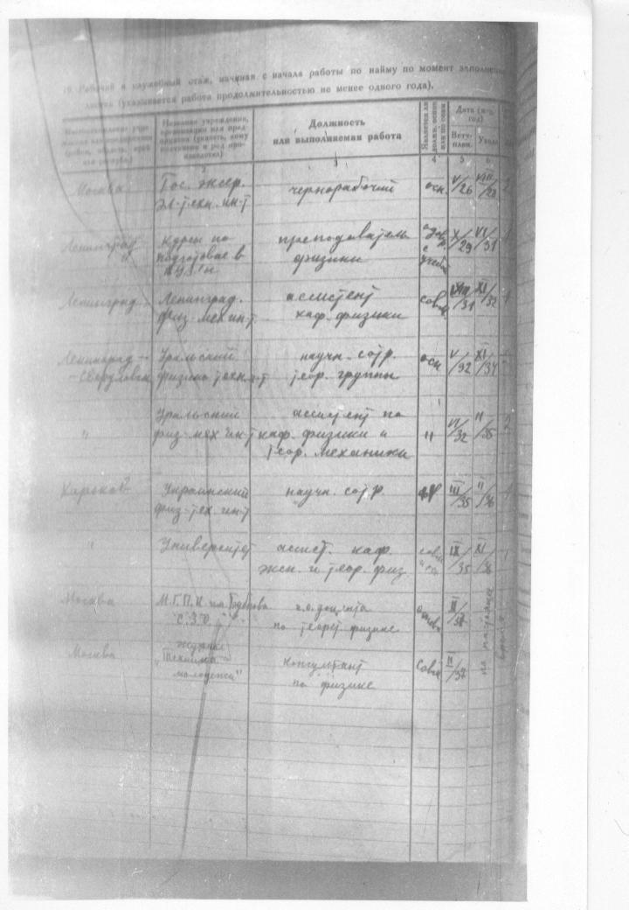
13. Рабочий и служебный стаж, начиная с начала работы по найму по момент заполнения
анкеты (указывается работа продолжительностью не менее одного года).
Москва
Гос. электр. [нрзб] ин-т
чернорабочий
V/26 — VIII/28
Ленинград
Курсы по подготовке в вузы
преподаватель физики
IX/28 — VI/31
Ленинград
Ленинград. физ. мех. ин-т
ассистент каф. физики
IX/31 — XI/32
Ленинград — Свердловск
Уральский физ.-тех. ин-т
научн. сотр. теор. группы
XI/32 — [нрзб]
"
Уральский физ.-тех. ин-т
ассистент каф. физики и теор. механики
VII/32 — VIII/35
Харьков
Украинский физ.-тех. ин-т
научн. сотр.
IX/35 — II/36
"
Университет
ассист. каф. эксперим. и теор. физ.
IX/35 — VIII/36
Москва
М.Г.П.И. им. Бубнова
[нрзб] по теор. физике
[нрзб]/38
Москва
журнал „Техника молодежи“
консультант по физике
[нрзб]/38
[на полях] [нрзб]
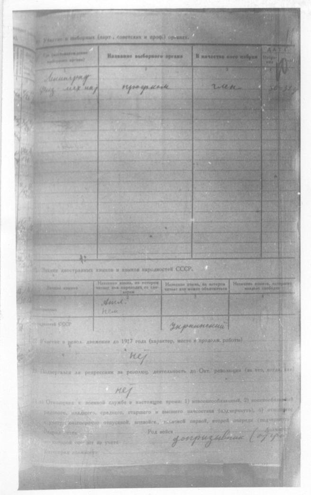
Участие в выборных (парт., советских и проф.) органах.
Где (наименование
выборного органа)
Ленинград
Физ. мех. ин-т
Название выборного органа
[нрзб]
В качестве кого избран
член
Дата
[нрзб]
Знание иностранных языков и языков народностей СССР.
Название языка, на котором
читает или переводит со сло-
варем
немецкий
[нрзб]
Название языка, на котором
читает или может объясняться
[нрзб]
Название языка, которым
владеет свободно
Украинский
Участие в револ. движении до 1917 года (характер, место и продолж. работы)
нет
Подвергался ли репрессиям за револ. деятельность до Окт. революции (за что, когда, кем)
нет
Отношение к военной службе в настоящее время: 1) невоеннообязанный, 2) военнообязанный
рядового, младшего, среднего, старшего и высшего начсостава (подчеркнуть), 3) отношение
к учету [нрзб]
Род войск допризывник (отсрочка)
[нрзб]
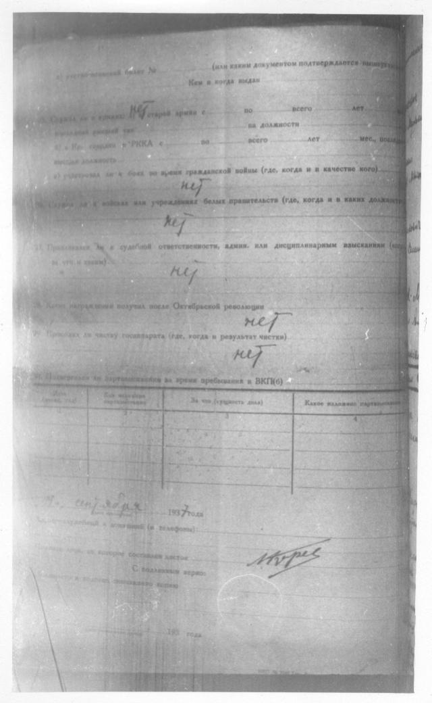
[нрзб]
(или каким документом подтверждается)
Кем и когда выдан
Служил ли в старой армии нет
по должности
всего лет
В Красной армии и РККА с по
всего лет
должность [нрзб]
Участвовал ли в боях во время гражданской войны (где, когда и в качестве кого)
нет
Служил ли в войсках или учреждениях белых правительств (где, когда и в каких должностях)
нет
Привлекался ли к судебной ответственности, админ. или дисциплинарным взысканиям
(когда, за что и каким)
нет
Какие награждения получил после Октябрьской революции
нет
Привлекался ли к чистке госаппарата (где, когда и результат чистки)
нет
Подвергался ли партвзысканиям за время пребывания в ВКП(б)
[нрзб]
[нрзб] 1937 года
[нрзб] личная подпись и заверение (в подлинности)
Корец
С должностью верно
[нрзб]
193 года
стр. 118 Связи Кореца
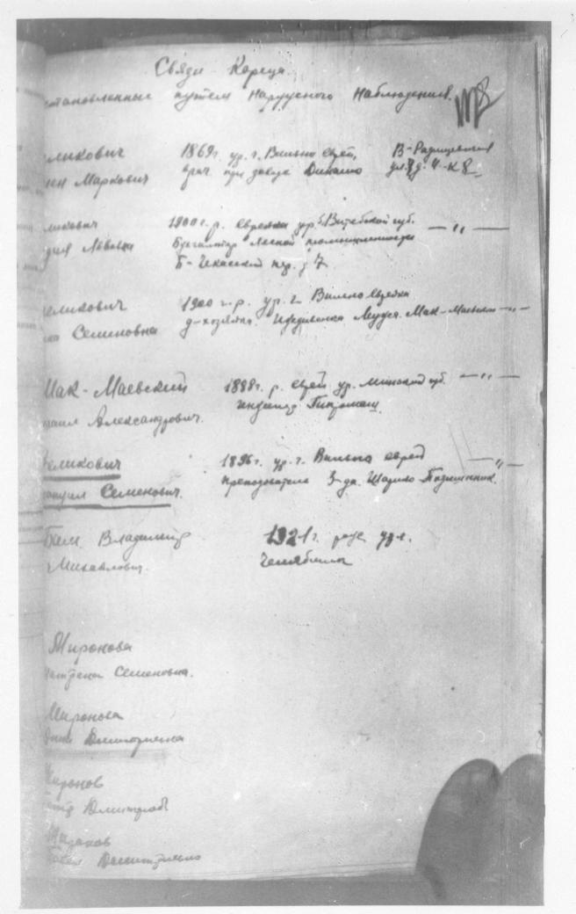
Чтение снимка, местами неуверенное. Сверьте со снимком.
Свед. Кореца
установленные путем наружного наблюдения
118
[нрзб] 1869 г. ур. г. Винница [нрзб]
[нрзб] 1900 г. [нрзб]
— „ —
[нрзб] 1920 г. р. ур. г. Винница [нрзб]
[нрзб] 1888 г. [нрзб]
— „ —
[нрзб] 1896 г. ур. г. Винница [нрзб]
— „ —
[нрзб] 1921 г. рожд. [нрзб]
[нрзб]
[нрзб]
[нрзб]
[нрзб]
стр. 119 Телефонные связи Кореца
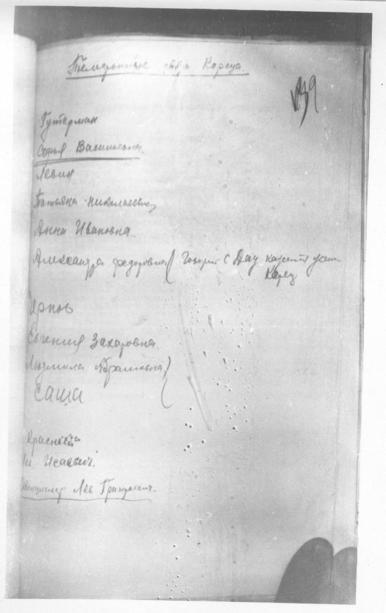
Фамилии свед. Кореца
119
Гутерман
Соф. Васильевна
Левин
Татьяна Николаевна
Анна Ивановна
Александра Федоровна
[на полях] говорил с [нрзб] научн. уст. Корец
[нрзб]
Евгений Захарович
Людмила Абрамовна
Саша
[нрзб]
Ив. Исаев
[нрзб] Лев Григорьевич
стр. 120 Листовка
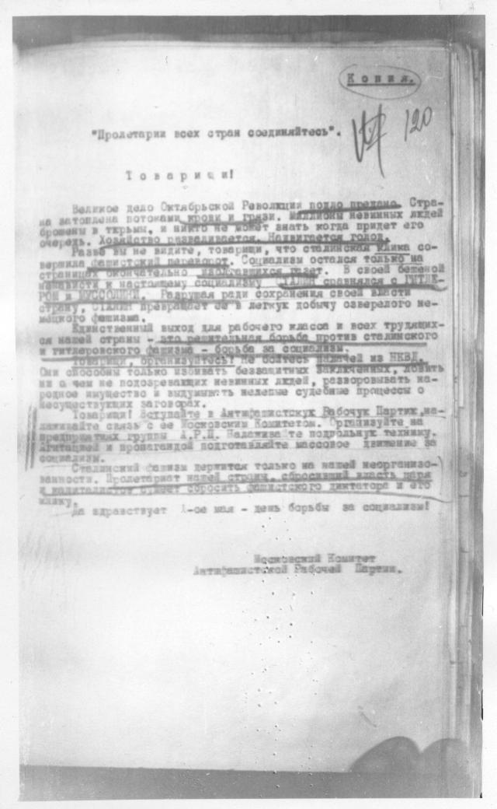
Копия.
УФ 120
„Пролетарии всех стран соединяйтесь“.
Товарищи!
Великое дело Октябрьской Революции подло предано. Стра-
на затоплена потоками крови и грязи. Миллионы невинных людей
брошены в тюрьмы, и никто не может знать когда придет его
очередь. Хозяйство разваливается. Надвигается голод.
Разве вы не видите, товарищи, что сталинская клика со-
вершила фашистский переворот. Социализм остался только на
страницах окончательно извращенных газет. В своей бешеной
панике и настоящему социализму [нрзб] сталинская о [нрзб]
РОИ и ТРОЦКИЗМЕ. Разрушая ради сохранения своей власти
страну, Сталин превращает ее в легкую добычу озверелого не-
мецкого фашизма.
Единственный выход для рабочего класса и всех трудящих-
ся нашей страны — это решительная борьба против сталинского
и гитлеровского фашизма — борьба за социализм.
Товарищи, организуйтесь! не бойтесь пыток из НКВД.
Они способны только избивать беззащитных заключенных, добить
из о чем не подозревающих невинных людей, разворовывать на-
родное имущество и выдумывать нелепые судебные процессы о
[нрзб] заговорах.
Товарищи! вступайте в Антифашистскую Рабочую Партию, на-
лаживайте связь с ее Московским Комитетом. Организуйте на
предприятиях группы А.Р.П. Поднимайте подпольную технику,
агитацией и пропагандой подготавливайте массовое движение за
социализм.
Сталинский фашизм держится только на нашей неорганизован-
ности. Пролетариат нашей страны, сбросивший власть царя
и капиталистов сумеет сбросить фашистского диктатора и его
клику.
Да здравствует 1-ое мая — день борьбы за социализм!
Московский Комитет
Антифашистской Рабочей Партии.
стр.65 Акт графической экспертизы, 14.12.38
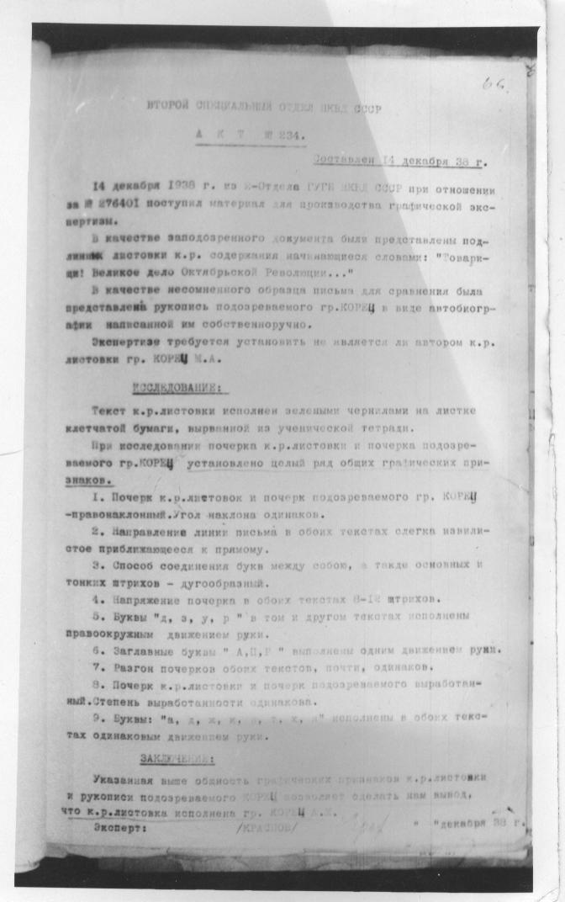
66
ВТОРОЙ СПЕЦИАЛЬНЫЙ ОТДЕЛ НКВД СССР
А К Т № 334.
Составлен 14 декабря 38 г.
14 декабря 1938 г. во 2-м Отделе ГУГБ НКВД СССР при отношении
за № 276401 поступил материал для производства графической экс-
пертизы.
В качестве заподозренного документа были представлены под-
линник листовки к.р. содержания начинающегося словами: „Товари-
щи! Великое дело Октябрьской Революции...“
В качестве несомненного образца письма для сравнения была
представлена рукопись подозреваемого гр.КОРЕЦ в виде автобиогр-
афии написанной им собственноручно.
Экспертизе требуется установить не является ли автором к.р.
листовки гр. КОРЕЦ М.А.
ИССЛЕДОВАНИЕ:
Текст к.р.листовки исполнен зелеными чернилами на листке
клетчатой бумаги, вырванной из ученической тетради.
При исследовании почерка к.р.листовки и почерка подозре-
ваемого гр.КОРЕЦ установлено целый ряд общих графических при-
знаков.
1. Почерк к.р.листовок и почерк подозреваемого гр. КОРЕЦ
— правонаклонный. Угол наклона одинаков.
2. Направление линии письма в обоих текстах слегка извили-
стое приближающееся к прямому.
3. Способ соединения букв между собою, а также основных и
тонких штрихов — дугообразный.
4. Напряжение почерка в обоих текстах 8-12 штрихов.
5. Буквы „д, з, у, р“ в том и другом текстах исполнены
правоокружным движением руки.
6. Заглавные буквы „А, П, Р“ выполнены одним движением руки.
7. Разгон почерков обоих текстов, почти, одинаков.
8. Почерк к.р.листовки и почерк подозреваемого выработан-
ный. Степень выработанности одинакова.
9. Буквы: „а, д, ж, к, н, п, х, ц“ исполнены в обоих текс-
тах одинаковым движением руки.
ЗАКЛЮЧЕНИЕ:
Указанная выше общность графических признаков к.р.листовки
и рукописи подозреваемого КОРЕЦ позволяет сделать нам вывод,
что к.р.листовка исполнена гр. КОРЕЦ М.А.
[нрзб] декабря 38 г.
Эксперт: /КРАСНОВ/
стр. 59 Постановление о приобщении к делу вещ. доказательств, 23.12.38
2
58
[на полях] [нрзб]
При первой встрече с Вайсбергом уже как
с [зачеркнуто: [нрзб]] настоящий раз, последний рассказал мне ни
какой особой поручений дано не было. Вайсберг
мне только подтвердил слова Фомина, что
наша антисоветская группа действительно
работает по заданию немецкой разведки и что
мне надо продолжать ту антисоветскую деятель-
ность какую я вел раньше, т.е. вести антисовет-
скую агитацию среди близких мне научных работ-
ников УФТИ. Обязательно их в антисоветском
духе и привлекать к подрывной деятельности.
По заданию Фомина мной была создана
антисоветская группа [нрзб] и подготовлена
к распространению антисоветской листовки.
Кроме того имел задание Фомина и Вайсберга
по выявлению настроений среди научных работников
и при встречах с ними информировал их о выяв-
ленных мной антисоветски настроенных лицах
с которыми я встречался в Харькове и Москве о
чем мной подробно показано в предыдущих пока-
заниях. Ни каких других сведений интимного
порядка я им не передавал. По заданию немецкой
13/XII Корец
Вопросы: Опер. Уполн. 3 отд. 2 отд. ГУГБ
лейтенант ГБ [подпись] /Муравьев/
стр.60 Протокол предъявления материалов следствия,
Протокол
(предъявления материала следствия)
60
г. Москва 1938 г. Декабря 22 дня. Я опер. уполномоченный
3-го отд. 2-го отд. ГУГБ НКВД СССР лейтенант ГБ Муравьев
объявил обвиняемому Корец Моисею Абрамовичу,
что следствие по его делу, по обвинению его в [нрзб]
предусмотренных ст.ст. 58-10, 58-11 УК РСФСР, окончено.
И руководствуясь ст. 206 УПК предъявил материал
следствия сл. дело № 13749 для ознакомления и
на вопрос что может добавить к своим показаниям
обвиняемый Корец ответил: что подтверждаю
ранее данные мной показания следствию [нрзб]
ничего не имею.
Об окончании следствия мне объявлено
и материал следствия мне предъявлен
в чем и расписуюсь Корец
Опер. Уполн. 3 отд. 2 отд. ГУГБ
лейтенант ГБ [подпись] /Муравьев/
Текст снят со снимков дела. Неразобранные слова отмечены [нрзб]. Там, где страница слишком бледная, оставлен только снимок.